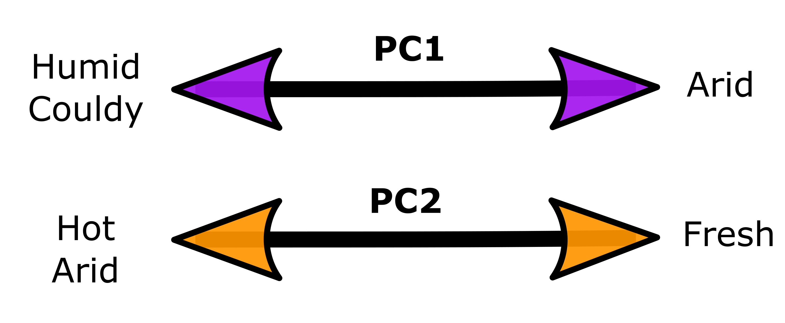

Summarising ecological variables into principal components
Ecological Variables
Setting up
Libraries sourced from an additional script
source("./MacroEcol_1_Libraries.R")Ecological data was obtained from ALA and AWAP data bases through additional scripts (available in the scripts folder of this same project)
#Data sourced from additional scripts:
#ALA Data
source("./1_ALA_variables.R")
#AWAP Data
source("./4_AWAPDailyQueries_2022.R")We extracted the climate variables correspondent to the activity period of each species (see additional scripts for more details)
vegeta <- read_csv("../Data/6_VegetationVariables.csv")
climat <- read_csv("../Data/7_ClimateVariables.csv")The climate data we extracted contained many additional variables, but we decided to use only the most informative ones
climat <-
climat %>%
filter (species != "xyle3" &
species != "oliv3") %>% # removed. vegetation data not available
arrange (species) %>%
dplyr::select (c(1,5:8,11:19)) %>%
dplyr::rename(
over35 = avg_temp_over_35, # days over 35deg averaged through 10 years
MaxT = avg_max_temp, # daily -> mean in one month -> mean over 10 y
MinT = avg_min_temp, # daily -> mean in one month -> mean over 10 y
Solar = avg_sol, # daily radiation -> mean in month -> mean over 10 y
Vapour =avg_vpr, # vapor pressure -> mean in month -> mean over 10 y
Clouds = cloud_cover, # cloud cover per year
Rain = avg_rr) # rainfall per day -> mean in one month -> mean over 10 years
names(climat) ## [1] "species" "over35" "MaxT" "MinT" "Solar"
## [6] "Clouds" "Rain" "Vapour" "avg_temp_over_35_Coll" "avg_max_temp_Coll"
## [11] "avg_min_temp_Coll" "avg_sol_Coll" "avg_rr_Coll" "avg_vpr_Coll"# Suffix Coll = value for the parameter in the collection month.
# No suffix = average value for this variable across the activity period
vegeta <-
vegeta %>%
filter (spp != "vrdi1"&
spp != "rose05") %>% # removed. climate data not available
arrange (spp) %>%
dplyr::select (c(1,11:18)) # Keep only the vegetation variables
names(vegeta) <- (c("beetle", "NPP", "BareSoil", "LeafArea",
"FPAR", "Aridity", "C3Macro", "C3Meso", "C4Mega")) # rename
EcoVar <-
data.frame(vegeta,climat) %>%
dplyr::select (- species) %>%
dplyr::select (c(1,6:16)) %>% # Keep only variables for the period of activity
mutate (AridityN = Aridity * -1) %>% # Because arid = closer to 0
dplyr::select (- Aridity)Some beetles were removed from the analysis because their position on the phylogeny is uncertain.
EcoVar <-
EcoVar %>%
mutate (spp = substr(beetle, 1, 4)) %>%
filter (spp != "ambl"& # Amblyterus cicatricosus
spp != "psqz"& # Pseudoschizongnatus schoenfeldti
spp != "saul"& # Saulostomus villosus
spp != "sqzb"& # Schizognathus burmeisteri
spp != "sqzc"& # Schizognathus compressicornis
spp != "sqzm" # Schizognathus mesosternalis
) %>% # These species were removed. No phylogenetic info
dplyr::select (-spp)Finally we obtained the data frame EcoVar which contains
all the relevant ecological variables for the relevant species.
But before starting the analysis, we studied the correlations between the variables.
Correlations
We obtained the \(R^2\) and correspondent p values for all combinations between the ecological variables.
EVarP <- EcoVar[,c(2:length(EcoVar))] # remove the categorical variables
EVarMatP<- Hmisc::rcorr(as.matrix(EVarP))
EVarR2P <- round(EVarMatP$r, 2) # R2 values
EvarCpP <- round(EVarMatP$P, 5) # p valuesThe following are the results for all variables including Vegetation and climate for activity period:
EVarR2P %>%
kbl() %>%
kable_paper("hover", full_width = F)| C3Macro | C3Meso | C4Mega | over35 | MaxT | MinT | Solar | Clouds | Rain | Vapour | AridityN | |
|---|---|---|---|---|---|---|---|---|---|---|---|
| C3Macro | 1.00 | 0.57 | 0.99 | -0.09 | 0.68 | 0.87 | 0.47 | 0.55 | 0.84 | 0.95 | -0.36 |
| C3Meso | 0.57 | 1.00 | 0.48 | -0.47 | -0.03 | 0.26 | -0.23 | 0.73 | 0.64 | 0.42 | -0.61 |
| C4Mega | 0.99 | 0.48 | 1.00 | -0.02 | 0.73 | 0.90 | 0.53 | 0.49 | 0.81 | 0.96 | -0.32 |
| over35 | -0.09 | -0.47 | -0.02 | 1.00 | 0.49 | 0.22 | 0.47 | -0.55 | -0.20 | -0.01 | 0.40 |
| MaxT | 0.68 | -0.03 | 0.73 | 0.49 | 1.00 | 0.91 | 0.83 | -0.10 | 0.38 | 0.73 | 0.23 |
| MinT | 0.87 | 0.26 | 0.90 | 0.22 | 0.91 | 1.00 | 0.72 | 0.21 | 0.64 | 0.92 | -0.06 |
| Solar | 0.47 | -0.23 | 0.53 | 0.47 | 0.83 | 0.72 | 1.00 | -0.26 | 0.23 | 0.53 | 0.28 |
| Clouds | 0.55 | 0.73 | 0.49 | -0.55 | -0.10 | 0.21 | -0.26 | 1.00 | 0.61 | 0.52 | -0.59 |
| Rain | 0.84 | 0.64 | 0.81 | -0.20 | 0.38 | 0.64 | 0.23 | 0.61 | 1.00 | 0.77 | -0.67 |
| Vapour | 0.95 | 0.42 | 0.96 | -0.01 | 0.73 | 0.92 | 0.53 | 0.52 | 0.77 | 1.00 | -0.27 |
| AridityN | -0.36 | -0.61 | -0.32 | 0.40 | 0.23 | -0.06 | 0.28 | -0.59 | -0.67 | -0.27 | 1.00 |
EvarCpP %>%
kbl() %>%
kable_paper("hover", full_width = F)| C3Macro | C3Meso | C4Mega | over35 | MaxT | MinT | Solar | Clouds | Rain | Vapour | AridityN | |
|---|---|---|---|---|---|---|---|---|---|---|---|
| C3Macro | NA | 0.00000 | 0.00000 | 0.17021 | 0.00000 | 0.00000 | 0.00000 | 0.00000 | 0.00000 | 0.00000 | 0.00000 |
| C3Meso | 0.00000 | NA | 0.00000 | 0.00000 | 0.65740 | 0.00002 | 0.00023 | 0.00000 | 0.00000 | 0.00000 | 0.00000 |
| C4Mega | 0.00000 | 0.00000 | NA | 0.72154 | 0.00000 | 0.00000 | 0.00000 | 0.00000 | 0.00000 | 0.00000 | 0.00000 |
| over35 | 0.17021 | 0.00000 | 0.72154 | NA | 0.00000 | 0.00025 | 0.00000 | 0.00000 | 0.00154 | 0.87588 | 0.00000 |
| MaxT | 0.00000 | 0.65740 | 0.00000 | 0.00000 | NA | 0.00000 | 0.00000 | 0.10765 | 0.00000 | 0.00000 | 0.00019 |
| MinT | 0.00000 | 0.00002 | 0.00000 | 0.00025 | 0.00000 | NA | 0.00000 | 0.00050 | 0.00000 | 0.00000 | 0.34075 |
| Solar | 0.00000 | 0.00023 | 0.00000 | 0.00000 | 0.00000 | 0.00000 | NA | 0.00002 | 0.00020 | 0.00000 | 0.00000 |
| Clouds | 0.00000 | 0.00000 | 0.00000 | 0.00000 | 0.10765 | 0.00050 | 0.00002 | NA | 0.00000 | 0.00000 | 0.00000 |
| Rain | 0.00000 | 0.00000 | 0.00000 | 0.00154 | 0.00000 | 0.00000 | 0.00020 | 0.00000 | NA | 0.00000 | 0.00000 |
| Vapour | 0.00000 | 0.00000 | 0.00000 | 0.87588 | 0.00000 | 0.00000 | 0.00000 | 0.00000 | 0.00000 | NA | 0.00001 |
| AridityN | 0.00000 | 0.00000 | 0.00000 | 0.00000 | 0.00019 | 0.34075 | 0.00000 | 0.00000 | 0.00000 | 0.00001 | NA |
Afterwards we removed the variables with correlations of R > 0.8
EcolVar <-
EcoVar %>%
dplyr::select (- C3Macro, -C4Mega, -C3Meso, -MinT)
EVar <- EcolVar[,c(2:length(EcolVar))] # remove the categorical variables
EVarMat<- Hmisc::rcorr(as.matrix(EVar))
EVarR2 <- round(EVarMat$r, 2) # R2 values
EvarCp <- round(EVarMat$P, 5) # p valuesFinally, we considered only these variables:
EVarR2 %>%
kbl() %>%
kable_paper("hover", full_width = F)| over35 | MaxT | Solar | Clouds | Rain | Vapour | AridityN | |
|---|---|---|---|---|---|---|---|
| over35 | 1.00 | 0.49 | 0.47 | -0.55 | -0.20 | -0.01 | 0.40 |
| MaxT | 0.49 | 1.00 | 0.83 | -0.10 | 0.38 | 0.73 | 0.23 |
| Solar | 0.47 | 0.83 | 1.00 | -0.26 | 0.23 | 0.53 | 0.28 |
| Clouds | -0.55 | -0.10 | -0.26 | 1.00 | 0.61 | 0.52 | -0.59 |
| Rain | -0.20 | 0.38 | 0.23 | 0.61 | 1.00 | 0.77 | -0.67 |
| Vapour | -0.01 | 0.73 | 0.53 | 0.52 | 0.77 | 1.00 | -0.27 |
| AridityN | 0.40 | 0.23 | 0.28 | -0.59 | -0.67 | -0.27 | 1.00 |
EvarCp %>%
kbl() %>%
kable_paper("hover", full_width = F)| over35 | MaxT | Solar | Clouds | Rain | Vapour | AridityN | |
|---|---|---|---|---|---|---|---|
| over35 | NA | 0.00000 | 0e+00 | 0.00000 | 0.00154 | 0.87588 | 0.00000 |
| MaxT | 0.00000 | NA | 0e+00 | 0.10765 | 0.00000 | 0.00000 | 0.00019 |
| Solar | 0.00000 | 0.00000 | NA | 0.00002 | 0.00020 | 0.00000 | 0.00000 |
| Clouds | 0.00000 | 0.10765 | 2e-05 | NA | 0.00000 | 0.00000 | 0.00000 |
| Rain | 0.00154 | 0.00000 | 2e-04 | 0.00000 | NA | 0.00000 | 0.00000 |
| Vapour | 0.87588 | 0.00000 | 0e+00 | 0.00000 | 0.00000 | NA | 0.00001 |
| AridityN | 0.00000 | 0.00019 | 0e+00 | 0.00000 | 0.00000 | 0.00001 | NA |
PCA
Testing correlations
Running a PCA is only possible if variables can be correlated:
cord <- cor(EVar) # default: pearsons correlation coeficient
N <- dim(EVar)[1] # number of observations
cortest.bartlett(cord,n=N) # Are the variables correlated? Yes p < 0.05## $chisq
## [1] 1693.035
##
## $p.value
## [1] 0
##
## $df
## [1] 21Yes, they can be summarised in the new variables called components
Extract components
Here we extracted the eigen values, components and loadings matrix
eigVal <- eigen(cord) # Extract eigen values
vectorev <- eigVal$vectors # vector with the eigen values
compv <- prcomp(EVar, retx=TRUE, center=TRUE, scale. = TRUE) # components
load<-compv$rotation # Loadings matrix Scree Plot
Represents the eigen values associated to each component. We used only the ones with eigen value > 1.
{ plot(c(1:length(eigVal$values)),eigVal$values,type="b", cex=1.4,
ylab="Eigen Values",xlab="Principal components",
pch=21,bg="#04C799")
abline(h=1,col="dodgerblue3",lwd=2,lty=2)}
Variance Explained
The following table shows the proportion of variance explained by each component.
summary(compv)## Importance of components:
## PC1 PC2 PC3 PC4 PC5 PC6 PC7
## Standard deviation 1.7206 1.663 0.77800 0.59788 0.40371 0.31950 0.21572
## Proportion of Variance 0.4229 0.395 0.08647 0.05107 0.02328 0.01458 0.00665
## Cumulative Proportion 0.4229 0.818 0.90442 0.95549 0.97877 0.99335 1.00000PC1 and PC2 are able to explain 82% of all the variance in ecological habitats for our samples.
Loadings Matrix
The colours in the following figure represent the correlations of each variable is to each PC
par(mar=c(4, 8, 4, 4))
plot(load[,1:2],cex=0.8,breaks=c(-1,-0.5,-0.4,-0.3,0.3,0.4,0.5,1),
las=2,ylab=" ",xlab=" ",
digits=2,
col=c(
"#762A83", "#AF8DC3",
"#E7D4E8", "#F7F7F7",
"#D9F0D3", "#7FBF7B",
"#1B7837"
),
main="Loadings matrix ") 
Lower PC1 = higher humidity (vapour, rain and clouds) lower aridity.
Lower PC2 = higher solar radiation, higher max temp, more days above 35 and more aridity
Plot
# brewer.pal(n = 7, name = "Accent")
# Extract PC axes for plotting
PCAvalues <- data.frame(Species = EcolVar$beetle,
compv$x)
# Extract loadings of the variables
PCAloadings <- data.frame(Variables = rownames(compv$rotation), compv$rotation)
# PC1 vs PC2
ggplot(PCAvalues, aes(x = PC1, y = PC2)) +
geom_point(fill="#39BEB1",col="black",pch=21,size=3.2,alpha=0.4)+
theme_bw()+
geom_text(data = subset (PCAvalues, PC1 > 2 | PC1 < -2.5 | PC2 < -2.5),
alpha=.3, size=1, aes(label=Species),col="black")+
annotate("text", size=3,
x = (PCAloadings$PC1*11.5),
y = (PCAloadings$PC2*11.5),
label = (PCAloadings$Variables))+
geom_segment(data = PCAloadings[c(1,2,3),],
aes(x = 0, y = 0,
xend = (PC1*11), yend = (PC2*11)),
arrow = arrow(
length = unit(1/2,"picas")),
color = "#c23a58") +
geom_segment(data = PCAloadings[c(4,5,6,7),],
aes(x = 0, y = 0,
xend = (PC1*11), yend = (PC2*11)),
arrow = arrow(
length = unit(1/2,"picas")),
color = "#3a97c2") +
geom_hline(yintercept = 0, linetype ="dashed",colour="gray")+
geom_vline(xintercept = 0, linetype ="dashed",colour="gray") +
ylim(-10, 5) +
xlim(-7, 5)
Results from this step
We obtained a data frame with the PC values that summarise the ecological variables considered in our analysis.
PC_Values <- PCAvalues[ , 1 : 3]Then, we added the PC values to the consolidated files obtained in previous steps which includes the optical variables, size and phylogeny name:
Reflectivity by
individual
Cons1oo <- read.csv("../Data/FromCode/ConsolidatedReflectivityInd.csv") [-1]
Cons1 <- data.frame(Cons1oo, PC_Values) %>%
dplyr::select(-Species)
write.csv(Cons1,"../Data/FromCode/ConsReflEcolInd.csv")
names(Cons1)## [1] "ind" "R_ALL" "R_VIS" "R_NIR" "Res" "size" "phylogeny_name"
## [8] "PC1" "PC2" Absorptivity by
individual
Cons2oo <- read.csv("../Data/FromCode/ConsolidatedAbsoptivityInd.csv") [-1]
Cons2 <-
PC_Values %>%
filter(Species %in% (Cons2oo$ind)) %>% # Subset the PCA values
arrange(Species) %>%
bind_cols(. , Cons2oo) %>% # join with the 'Optical' Data frame
dplyr::select(-Species) %>%
dplyr::select(ind, everything()) # rearrange the column order
write.csv(Cons2,"../Data/FromCode/ConsAbsEcolInd.csv")
names(Cons2)## [1] "ind" "PC1" "PC2" "size" "R_ALL" "R_VIS" "R_NIR" "T_ALL" "T_VIS" "T_NIR" "A_ALL" "A_VIS" "A_NIR"Meaning of each PC
Lower PC1 = higher humidity: vapour, rain and clouds, which in turn correlates with more plant coverage.
Lower PC2 = higher solar radiation and max temp, more days above 35 and more aridity.

im<-load.image("../Data/RmdImages/PCarrows.png")
plot(im, axes = FALSE)